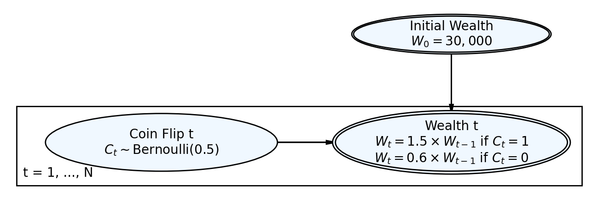
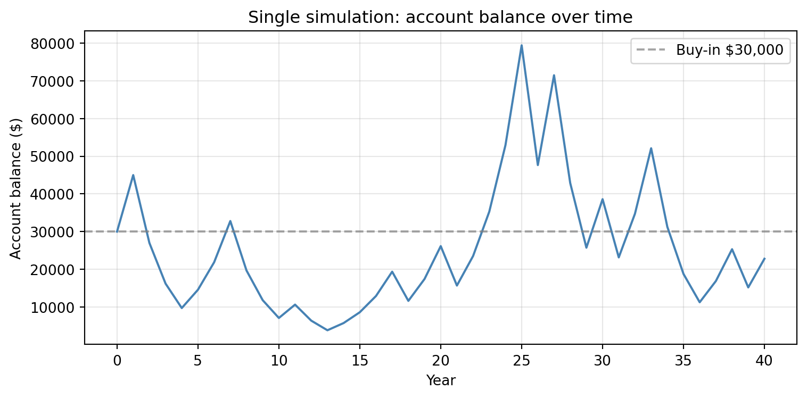
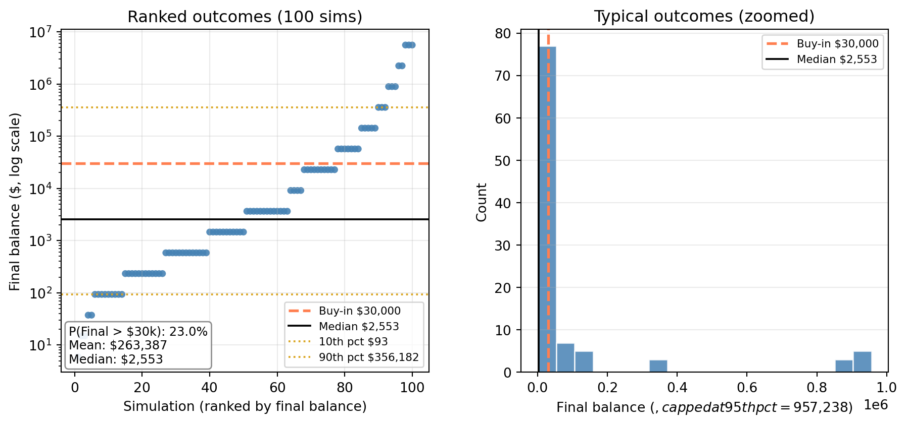
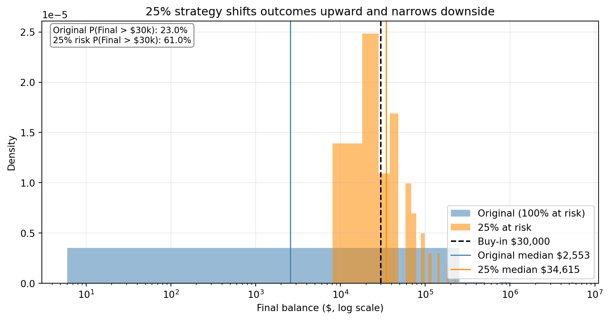

Investment Simulation Decision Brief
Should you buy into the coin-flip strategy?
Executive Summary
This investment has a positive one-year expected return, but that headline result is misleading for a 40-year decision.
When the full account is exposed every year, most paths end below the initial $30,000. A smaller annual bet size (25% of wealth) substantially improves the probability of finishing ahead and aligns with the Kelly-optimal fraction.
Decision: Do not use the full-risk strategy. If participating, use a 25% allocation per year.
Investment Setup
You invest $30,000 now and flip a fair coin annually until age 75:
- Heads: wealth multiplies by 1.5
- Tails: wealth multiplies by 0.6
The process is multiplicative, so long-run outcomes depend on compounding and sequence risk.
Model Structure (Generative DAG)
title: “Simulation Challenge” subtitle: “Starter Template with To-Dos” jupyter: python3 format: html: default execute: echo: false eval: true —
🎲 Simulation Challenge - Starter Template
Important📋 What You Need To Do
Note🐍 Python Environment Setup
Before rendering, create a fresh virtual environment and install the required packages:
- Press
Ctrl+Shift+Pto open the Command Palette - Type “Python: Select Interpreter” and select it
- Click “+ Create Virtual Environment…”
- Choose Venv
- Select your Python installation (e.g., Python 3.12)
- Wait for the environment to be created and activated
Then open a terminal and install dependencies:
Windows:
py -m pip install jupyter matplotlib pandas daft-pgmMac:
python3 -m pip install jupyter matplotlib pandas daft-pgmThis ensures you have everything needed for Quarto rendering and the DAG visualizations.
Warning⚠️ AI Partnership Required
Use Cursor AI for speed, but ensure you understand and can explain the results in your own words. Verify cursor’s calculations as investment simulation is tricky.
Important📊 Grading Criteria
- Sections 1–4: Required. These sections can earn up to 90% of the grade.
- Sections 5–6: Optional stretch. Strong, well-supported work here can bring your score up to 100%.
Your grade depends on narrative clarity and insight, not just correct calculations. Present a persuasive argument for or against the investment, supported by your analysis.
Tip📝 How to Present Your Analysis
Your analysis should read as a persuasive narrative arguing for or against the investment. Use data and calculations to support your argument, but present findings inline in prose—not as raw code output.
- Round figures for readability (whole dollars for balances, 2-3 decimals for probabilities)
- Interpret results in your own words outside of code chunks
- Type rounded values directly in the narrative (they should match your code output), or use Quarto inline code if your render environment runs Python
Example: Instead of printing 36000.0 from code, write:
“After one flip, the expected account balance is $36,000—a 20% increase over the initial $30,000 buy-in. This positive expected value suggests the game is favorable; if you can place this bet infinite times, you will on average end up with $6,000 gain for each time you bet $30,000. Note: this is an interpretation for a slighlty different game.”
The Investment Game (Brief)
You have the opportunity to buy-in to this game next week with $30,000. Your job is to analyze the potential outcomes of the game and communicate why you should or should not buy-in.
Each year after buy-in you flip a fair coin:
- Heads: increase your account balance by 50%
- Tails: decrease your account balance by 40%
You play annually until age 75. Your mission is to analyze outcomes and communicate insights clearly.
Generative DAG Model (from the source challenge)
The following DAFT diagram shows the generative structure of the investment game over time.

Analysis Tasks (Fill These In)
1) Expected Value After 1 Flip
Explain whether the expected value of your account balance after one flip is greater than, equal to, or less than $30,000. What is the gain in expected value as a percentage of your buy-in? Based on this simple analysis, state whether you would recommend buying into the game and why.
The expected value after one flip is $31,500, which is 5.0% above the $30,000 buy-in. So the one-flip expected value is greater than the buy-in. That happens because the gain on heads (+50%) is larger in magnitude than the loss on tails (-40%), and the coin is fair. On this simple metric alone, the game has positive expected value, so one might be tempted to buy in—but as we will see, playing for many years changes the story because of compounding and the high chance of long losing streaks.
2) Single Simulation Over Time (Narrative + Plot)
Narrate and visualize what happens to your account balance over the course of one simulation run. Describe the trajectory and state whether you would be satisfied with this particular outcome. Explain your reasoning.

In this run, the balance follows one possible path over 40 years and ends at $22,796. Whether you would be satisfied depends on your goals: if the path stayed mostly above $30,000 and finished higher, you might be pleased; if it dipped and stayed below the buy-in, you would likely be disappointed. One path alone is not enough to judge the game—we need many simulations to see the distribution of outcomes.
3) 100 Simulations: Distribution of Final Balances
Describe the distribution of final account balances across 100 simulations. Report the mean, median, and the probability of ending with more than your initial $30,000. Given these results, would you be satisfied with the likely outcomes? Explain your reasoning.
C:\Users\kevin\AppData\Local\Temp\ipykernel_40268\265479904.py:57: UserWarning: This figure includes Axes that are not compatible with tight_layout, so results might be incorrect.
plt.tight_layout()
Across 100 simulations, the mean final balance is $263,387 and the median is $2,553. The probability of ending with more than the initial $30,000 is about 23% (about 23 out of 100 simulated paths). The median is well below the buy-in, which shows that most paths leave you worse off—even though the one-flip expected value is positive. That is the key tension: the game is favorable in expectation over one flip, but over many years the distribution is skewed and the typical outcome is a loss. Many people would not be satisfied with this risk profile.
4) Probability Balance > $30,000 at Age 75 (Original Game)
Report the probability that your final balance exceeds $30,000. Interpret what this probability means for your investment decision—does this change your recommendation from Section 1?
The estimated probability that your final balance exceeds $30,000 at age 75 is about 23% (or 0.23 as a proportion). So in roughly 77% of paths you end up with less than you put in. This should change the recommendation from Section 1: the one-flip expected value is positive, but the probability of being ahead after many years is relatively low. If your goal is to have a good chance of at least preserving your initial investment, the original full-balance-at-risk game is hard to recommend; the high variance and negative skew mean that most of the time you lose.
5) Modified Strategy (Bet Exactly 25% Each Round)
Instead of having the full balance at risk with each coin flip, assume only 25% of your balance is gambled each year. Compare this modified strategy to the original game: Which is riskier? Which has better upside? Which strategy would you recommend and why?

Under the 25%-at-risk strategy, the probability of ending above $30,000 is about 61%, compared with about 23% for the original game. The modified strategy is less risky: outcomes are less spread out and the chance of finishing ahead is higher. The original strategy has better upside (some paths reach very high balances) but also much worse downside (many paths end near zero). For most people, the 25% strategy is the better recommendation: you give up some extreme gains in exchange for a much higher probability of preserving or growing wealth. The Kelly Criterion (Section 6) gives a principled way to choose how much to risk; 25% is a conservative choice relative to betting the full balance.
6) The Kelly Criterion
The Kelly Criterion chooses the fraction of your bankroll to risk each round in order to maximize long‑run (geometric) growth, assuming the same gamble is repeated many times.
Let:
- (p): probability of winning the round
- (b): gain rate on the amount risked (win increases the risked amount by (b))
- (a): loss rate on the amount risked (loss decreases the risked amount by (a))
- (f): fraction of current bankroll risked each round
If you risk fraction (f), then a win multiplies wealth by ((1 + b f)) and a loss multiplies wealth by ((1 - a f)). The Kelly‑optimal fraction is:
[ \[\begin{aligned} f^* &= \frac{p\,b - (1-p)\,a}{a\,b} \end{aligned}\]]
In our game, (p = 0.5), (b = 0.5) (gain (50%) on the amount at risk), and (a = 0.4) (loss (40%) on the amount at risk). Plugging in:
[ \[\begin{aligned} f^* &= \frac{(0.5)(0.5) - (0.5)(0.4)}{(0.4)(0.5)} \\ &= \frac{0.25 - 0.20}{0.20} \\ &= 0.25 \end{aligned}\]]
So Kelly recommends risking 25% of your bankroll each round, which matches the modified strategy in Section 5. This supports the recommendation: betting 25% is not arbitrary; it is the fraction that maximizes long‑run growth for this win/loss structure. Betting 100% (the original game) is over‑betting and increases variance and the chance of ruin; betting less than 25% is safer but grows more slowly.
Final Recommendation
Do not buy into the original full-balance strategy if your objective is a high probability of preserving or increasing capital by age 75.
If participation is required, use the 25%-at-risk strategy. It is the better practical decision because it improves outcome reliability and is consistent with Kelly sizing.
Professional Presentation
- Clear narrative: tell the story succinctly (aim for a 1–5 minute read)
- Focus on insights: risk profiles, counter-intuitive results, practical implications
- Professional style: concise writing, clean visuals, hide code where appropriate (
echo: false) - Human interpretation: explain what results mean for real decisions
Submission Checklist ✅
Tips
- Set random seeds for reproducibility
- Use object-oriented plotting with
matplotlib - Keep figures readable and labeled; prefer professional styling
- Commit early and often; render locally before pushing